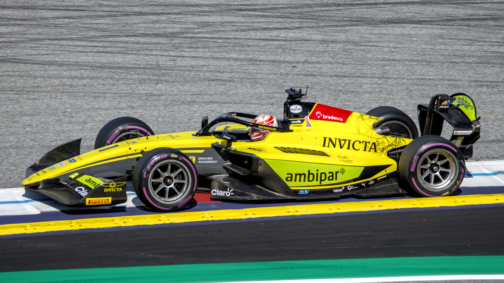

O Brasil terá mais um representante na Fórmula 1 na próxima temporada. Rafael Câmara, de apenas 21 anos, foi anunciado oficialmente pela Haas em 15 de outubro de 2026, com contrato de múltiplas temporadas. A contratação encerra as especulações sobre o futuro do jovem piloto e confirma a chegada de uma das maiores promessas brasileiras do automobilismo à principal categoria do esporte a motor.
Natural de Recife, Câmara assumirá a vaga do francês Esteban Ocon, que deixará a Haas ao término de 2026. O brasileiro chega à Fórmula 1 depois de conquistar o título da Fórmula 3 em 2025 e assumir a liderança da Fórmula 2 em sua temporada de estreia, competindo pela Invicta Racing. Sua ascensão também representa mais um resultado importante do programa de desenvolvimento de pilotos da Ferrari, responsável por acompanhar sua formação nas categorias de base.
A chegada de Rafael ganha uma dimensão ainda maior pelo momento do automobilismo nacional. Com Gabriel Bortoleto já estabelecido na Fórmula 1, o país terá novamente dois brasileiros entre os titulares da categoria em 2027, algo que não acontecia desde 2016.
Quem é Rafael Câmara, o novo brasileiro da Fórmula 1
Sua trajetória no automobilismo começou ainda na infância, com o kart, modalidade em que desenvolveu as habilidades que posteriormente chamariam a atenção de equipes europeias.
O pernambucano também tem uma ligação familiar com o automobilismo. Sua avó, Niege Rossiter, foi uma das pioneiras das competições automobilísticas em Recife durante a década de 1960. Entretanto, foi por meio de seus próprios resultados nas pistas que Câmara conseguiu transformar a paixão pelas corridas em uma carreira internacional.
Depois de competir no kart brasileiro e europeu, o piloto avançou para as categorias de monopostos. Em 2022, disputou campeonatos de Fórmula 4 e passou a construir uma trajetória marcada pela velocidade em voltas de classificação e pela regularidade nas corridas.
O reconhecimento internacional ganhou força com sua participação na Academia de Pilotos da Ferrari, programa de desenvolvimento da tradicional escuderia italiana.
De campeão da Fórmula Regional ao título da Fórmula 3
A temporada de 2024 foi decisiva para a sua carreira. Competindo pela Prema Racing, o brasileiro conquistou o título da Fórmula Regional Europeia, uma das principais competições de formação para jovens pilotos.
O desempenho abriu caminho para sua entrada na Fórmula 3 em 2025, quando passou a defender a Trident.
A estreia foi impressionante. Câmara venceu as duas primeiras corridas principais da temporada, disputadas em Melbourne, na Austrália, e Sakhir, no Bahrein. Posteriormente, voltou ao lugar mais alto do pódio em Barcelona, na Espanha, e em Budapeste, na Hungria.
A vitória no circuito de Hungaroring assegurou o campeonato com uma etapa de antecedência.
Os números da campanha reforçam o tamanho da conquista:
- Quatro vitórias em corridas principais.
- Cinco pole positions, recorde em uma única temporada da categoria.
- Premiado como melhor estreante da Fórmula 3 em 2025.
O domínio nas sessões classificatórias demonstrou uma característica especialmente valorizada na Fórmula 1: a capacidade de extrair desempenho máximo do carro em uma volta rápida.
Rafael Câmara lidera a Fórmula 2 em 2026
A passagem para a Fórmula 2 acontece nesta temporada, com a Invicta Racing, equipe que também participou da formação de Gabriel Bortoleto.
Apesar do desafio de enfrentar pilotos mais experientes, Câmara conseguiu resultados importantes logo em sua primeira temporada.
O pernambucano venceu as corridas principais em Barcelona, Spa-Francorchamps e Baku. A terceira vitória aconteceu no Azerbaijão, onde terminou a prova na segunda colocação na pista, mas herdou o primeiro lugar após uma penalização de cinco segundos aplicada ao irlandês Alexander Dunne.
O resultado foi fundamental para colocar o brasileiro na liderança do campeonato.
Classificação da Fórmula 2 após a etapa do Azerbaijão:
- Rafael Câmara (Invicta Racing) — 207 pontos
- Nikola Tsolov (Campos Racing) — 200 pontos
- Alexander Dunne (Rodin Motorsport) — 189 pontos
- Gabriele Minì (MP Motorsport) — 163 pontos
- Dino Beganovic (DAMS Lucas Oil) — 137 pontos
Com sete pontos de vantagem sobre Nikola Tsolov, o brasileiro chega às duas últimas etapas da temporada disputando o título.
A programação restante prevê a etapa do Catar, em Lusail, entre 27 e 29 de novembro, seguida pelo encerramento em Abu Dhabi, no circuito de Yas Marina, entre 4 e 6 de dezembro.
A escolha da Haas por Rafael Câmara
A contratação não aconteceu apenas pelo histórico de títulos nas categorias de base.
Um dos momentos decisivos foi um teste realizado em agosto de 2026, no Autódromo Internacional do Algarve, em Portimão, Portugal.
Na atividade, Câmara pilotou o VF-25, carro utilizado pela Haas na temporada anterior da Fórmula 1.
A equipe avaliou diferentes candidatos à vaga, incluindo Leonardo Fornaroli, campeão da Fórmula 2 de 2025, além dos pilotos de reserva Jack Doohan e Ryo Hirakawa.
O chefe da Haas, Ayao Komatsu, destacou especialmente a adaptação do brasileiro ao carro e às diferentes condições de pista.
Câmara demonstrou velocidade, capacidade de evolução ao longo das sessões e controle emocional diante da pressão. A avaliação positiva foi determinante para sua escolha.
A decisão também revela uma aposta da Haas em desenvolver jovens talentos, aproveitando a experiência adquirida com Oliver Bearman, outro piloto ligado à Academia da Ferrari.
O companheiro de equipe na próxima temporada
Uma questão importante envolve a formação da equipe americana para 2027.
A saída de Esteban Ocon está definida, assim como a contratação de Rafael Câmara. Entretanto, até 20 de outubro de 2026, a Haas ainda não havia oficializado o segundo piloto da dupla.
O principal candidato à permanência é o britânico Oliver Bearman, que já representa a equipe e também possui ligação com a Ferrari.
Ayao Komatsu manifestou publicamente o interesse de manter Bearman, mas explicou que a definição ainda depende de questões contratuais.
Portanto, o cenário mais provável é uma parceria entre Rafael e Oliver Bearman, embora somente a presença do brasileiro esteja oficialmente assegurada para 2027.
O número que pretende utilizar na Fórmula 1
Outra curiosidade, quando Rafael revelou sua preferência pelo número 50 na próxima temporada.
Inicialmente, o brasileiro gostaria de utilizar o número 5, mas a identificação já pertence a Gabriel Bortoleto.
A alternativa escolhida possui uma ligação com sua data de nascimento: 5 de maio de 2005.
A preferência pelo número 50 já foi manifestada pelo piloto, mas a identificação definitiva ainda depende da publicação da lista oficial de inscritos pela Federação Internacional de Automobilismo.
Brasil volta a ganhar força na Fórmula 1
A contratação de Rafael Câmara também representa um marco regional. O pernambucano será o primeiro piloto nascido no Nordeste a disputar o Campeonato Mundial de Fórmula 1.
O feito amplia a representatividade brasileira em uma categoria historicamente marcada por grandes nomes nacionais, como Emerson Fittipaldi, Nelson Piquet e Ayrton Senna.
Além disso, o retorno de dois representantes brasileiros ao grid oferece uma perspectiva diferente para o público nacional.
Em 2016, Felipe Massa e Felipe Nasr foram os últimos pilotos do país a disputar uma mesma temporada da Fórmula 1 como titulares. Agora, Rafael Câmara se junta a Gabriel Bortoleto, representante da Audi, para recuperar essa presença dupla.
A história da Haas na Fórmula 1
Fundada pelo empresário americano Gene Haas, proprietário da Haas Automation, a equipe estreou na Fórmula 1 em 2016, marcando o retorno de uma escuderia liderada por americanos à categoria após três décadas. Com sede nos Estados Unidos e estrutura operacional também na Inglaterra, a Haas iniciou sua trajetória com motores Ferrari e uma parceria técnica com a fabricante italiana Dallara.
Logo na estreia, no GP da Austrália de 2016, Romain Grosjean terminou em sexto lugar. O melhor desempenho da equipe no Mundial de Construtores aconteceu em 2018, quando conquistou a quinta colocação, somando 93 pontos. Outro momento histórico veio no GP de São Paulo de 2022, quando Kevin Magnussen conquistou a primeira pole position da escuderia, em Interlagos.
Apesar de enfrentar temporadas difíceis e oscilações de desempenho, a Haas consolidou sua presença no grid. Desde 2024, é comandada pelo japonês Ayao Komatsu e mantém uma parceria estratégica com a Ferrari. A chegada de Rafael Câmara em 2027 representa uma nova aposta da equipe no desenvolvimento de jovens talentos.
O que esperar de Rafael em 2027
Embora chegue à categoria com dois títulos importantes e resultados expressivos na Fórmula 2, ele encontrará um desafio muito diferente daqueles enfrentados durante sua formação.
A Fórmula 1 exige adaptação a carros mais complexos, gerenciamento de pneus, desenvolvimento técnico ao longo da temporada e capacidade de competir contra alguns dos pilotos mais experientes do automobilismo mundial.
A Haas também precisará oferecer condições competitivas para que o brasileiro consiga transformar seu potencial em resultados.
O principal objetivo inicial será construir regularidade, adaptar-se aos procedimentos da equipe e evoluir durante seu primeiro campeonato.
Antes disso, Câmara ainda tem uma missão importante: concluir a temporada de 2026 da Fórmula 2, na qual disputa diretamente o título com Nikola Tsolov e Alexander Dunne.
Independentemente do resultado final, sua presença na Fórmula 1 em 2027 já está assegurada.
A trajetória do jovem pernambucano, do kart ao contrato com a Haas, transforma Rafael Câmara em um dos nomes mais relevantes do futuro do automobilismo brasileiro. Aos 21 anos, ele deixa de ser apenas uma promessa das categorias de acesso e passa a integrar oficialmente a nova geração de pilotos da Fórmula 1.